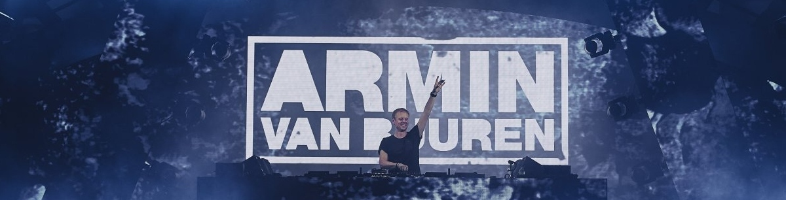
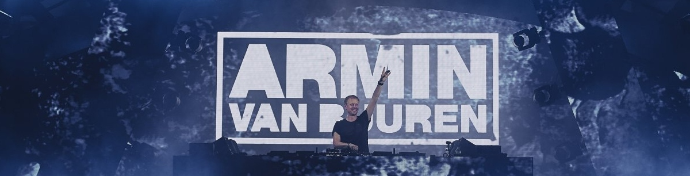

proximos recitales
Evento 1 ARMIN VAN BUREN - 17/11/2024 - Parque de la ciudad
Evento 2 GREEN VELVET - 25/12/2024 - Rose in rio

Evento 1 ARMIN VAN BUREN - 17/11/2024 - Parque de la ciudad
Evento 2 GREEN VELVET - 25/12/2024 - Rose in rio
El último álbum de Armin van Buuren, titulado "Feel Again" (2023), es una obra que refleja su deseo de reconectar con sus emociones y el público tras la pandemia. El álbum está dividido en tres partes, cada una con un enfoque distinto en la música y el estado emocional. Mezcla trance con elementos de house y pop, mostrando la evolución artística de Armin sin perder su esencia. Incluye colaboraciones con destacados artistas como Matoma y R3HAB, creando una experiencia auditiva variada. "Feel Again" es una exploración de sonidos modernos con un enfoque en la conexión emocional y la energía positiva.
El último álbum de Don Diablo, titulado "FOREVER" (2021), es una obra que combina su característico estilo future house con influencias pop y electrónicas modernas. En este álbum, Don Diablo colabora con varios artistas, como Ty Dolla $ign y Emeli Sandé, creando una mezcla de géneros que explora desde lo melódico hasta lo bailable. "FOREVER" refleja su visión artística futurista y su capacidad para fusionar elementos comerciales con la música electrónica de vanguardia. El álbum incluye sencillos exitosos como "Problems" y "Bad", reafirmando su posición como uno de los pioneros del future house en la escena global.
El último álbum de Green Velvet, "Illusions" (2020), es una colaboración con el productor británico Carl Craig. Es una obra que mezcla techno, house y elementos de acid, manteniendo el estilo icónico y experimental de Green Velvet. Con ritmos profundos y sintetizadores oscuros, "Illusions" ofrece una experiencia hipnótica y envolvente. Al escuchar el álbum, te transporta a un mundo underground lleno de energía cruda y futurista, evocando la atmósfera de un club íntimo. La música te hace sentir inmerso en un viaje mental, donde cada pista te invita a moverte y perderte en la cadencia del techno.